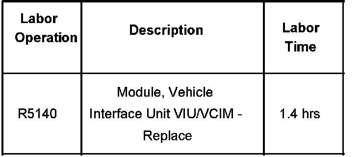

Interior - Rattle From Center of Instrument Panel
Bulletin No.: 06-08-49-019Date: September 08, 2006
TECHNICAL
Subject:
Rattle Noise from Center of Instrument Panel Carrier (Add Felt Tape to OnStar(R) Module Support Bracket)
Models:
2007 Cadillac Escalade Models
2007 Chevrolet Avalanche, Suburban, Tahoe
2007 GMC Yukon Models
Condition
Some customers may comment about a rattle noise coming from the center of the instrument panel carrier when driving over bumps.
Cause
This condition may be caused by the OnStar(R) module becoming loose in its support bracket.
Correction
If the noise is isolated to the center of the I/P carrier, inspect the mounting of the OnStar(R) module. If the OnStar(R) module is rattling in the OnStar(R) module support bracket, add felt tape to the outer ribs of the OnStar(R) module support bracket to tighten the fit between the bracket and the OnStar module. Refer to Communication Interface Module Replacement in SI.
Warranty Information

For vehicles repaired under warranty, use the table.

Disclaimer